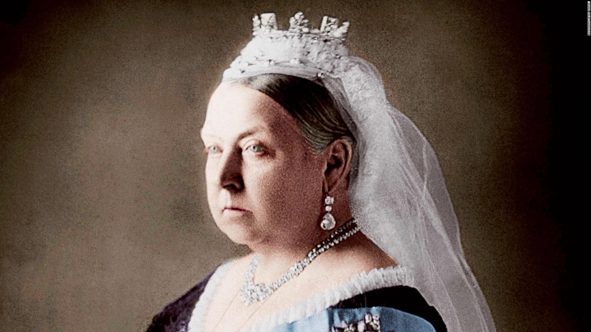
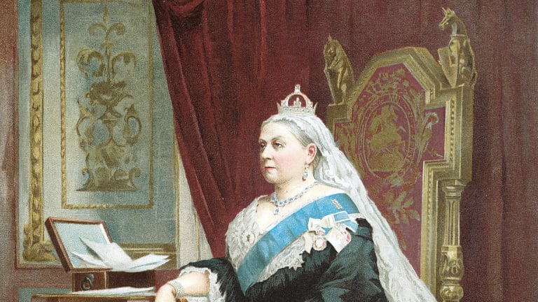
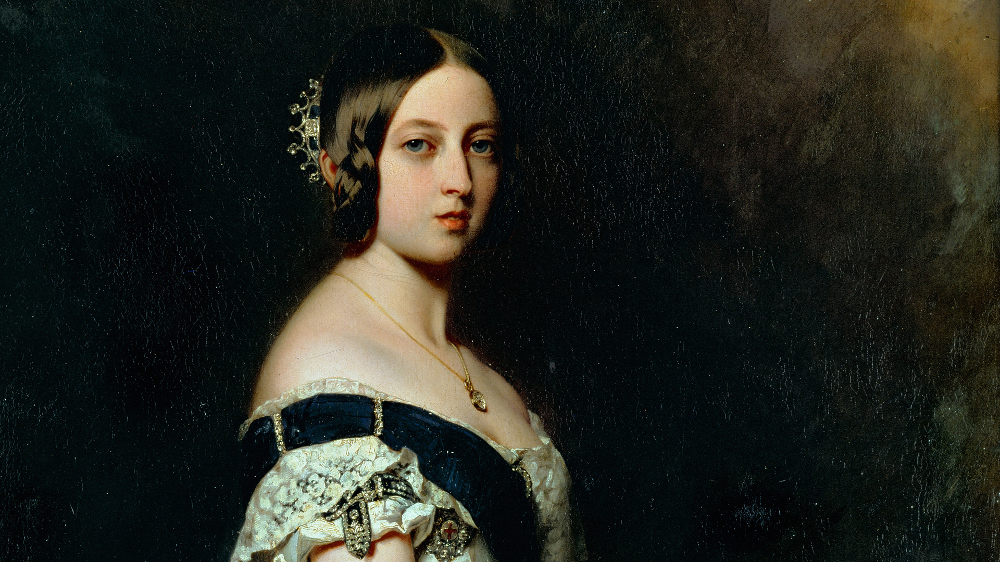

Victoria (Alexandrina Victoria; 24 May 1819 – 22 January 1901) was Queen of the United Kingdom of Great Britain and Ireland from 20 June 1837 until her death. She adopted the additional title of Empress of India on 1 May 1876. Known as the Victorian era, her reign of 63 years and seven months was longer than that of any of her predecessors. It was a period of industrial, cultural, political, scientific, and military change within the United Kingdom, and was marked by a great expansion of the British Empire. Victoria was the daughter of Prince Edward, Duke of Kent and Strathearn (the fourth son of King George III), and Princess Victoria of Saxe-Coburg-Saalfeld. After both the Duke and his father died in 1820, she was raised under close supervision by her mother and her comptroller, John Conroy. She inherited the throne aged 18 after her father's three elder brothers died without surviving legitimate issue. Though a constitutional monarch, privately, Victoria attempted to influence government policy and ministerial appointments; publicly, she became a national icon who was identified with strict standards of personal morality. Victoria married her cousin Prince Albert of Saxe-Coburg and Gotha in 1840. Their children married into royal and noble families across the continent, earning Victoria the sobriquet "the grandmother of Europe" and spreading haemophilia in European royalty. After Albert's death in 1861, Victoria plunged into deep mourning and avoided public appearances. As a result of her seclusion, republicanism in the United Kingdom temporarily gained strength, but in the latter half of her reign, her popularity recovered. Her Golden and Diamond Jubilees were times of public celebration. She died on the Isle of Wight in 1901. The last British monarch of the House of Hanover, she was succeeded by her son Edward VII of the House of Saxe-Coburg and Gotha.
  Victoria's father was Prince Edward, Duke of Kent and Strathearn, the fourth son of the reigning King of the United Kingdom, George III. Until 1817, Edward's niece, Princess Charlotte of Wales, was the only legitimate grandchild of George III. Her death in 1817 precipitated a succession crisis that brought pressure on the Duke of Kent and his unmarried brothers to marry and have children. In 1818 he married Princess Victoria of Saxe-Coburg-Saalfeld, a widowed German princess with two children—Carl (1804–1856) and Feodora (1807–1872)—by her first marriage to the Prince of Leiningen. Her brother Leopold was Princess Charlotte's widower. The Duke and Duchess of Kent's only child, Victoria, was born at 4.15 a.m. on 24 May 1819 at Kensington Palace in London.[1] Victoria was christened privately by the Archbishop of Canterbury, Charles Manners-Sutton, on 24 June 1819 in the Cupola Room at Kensington Palace.[2] She was baptised Alexandrina after one of her godparents, Emperor Alexander I of Russia, and Victoria, after her mother. Additional names proposed by her parents—Georgina (or Georgiana), Charlotte, and Augusta—were dropped on the instructions of Kent's eldest brother George, Prince Regent.[3] At birth, Victoria was fifth in the line of succession after the four eldest sons of George III: the Prince Regent (later George IV); Frederick, Duke of York; William, Duke of Clarence (later William IV); and Victoria's father, Edward, Duke of Kent.[4] The Prince Regent had no surviving children, and the Duke of York had no children; further, both were estranged from their wives, who were both past child-bearing age, so the two eldest brothers were unlikely to have any further legitimate children. William and Edward married on the same day in 1818, but both of William's legitimate daughters died as infants. The first of these was Princess Charlotte, who was born and died on 27 March 1819, two months before Victoria was born. Victoria's father died in January 1820, when Victoria was less than a year old. A week later her grandfather died and was succeeded by his eldest son as George IV. Victoria was then third in line to the throne after Frederick and William. William's second daughter, Princess Elizabeth of Clarence, lived for twelve weeks from 10 December 1820 to 4 March 1821, and for that period Victoria was fourth in line.[5] The Duke of York died in 1827, followed by George IV in 1830; the throne passed to their next surviving brother, William, and Victoria became heir presumptive. The Regency Act 1830 made special provision for Victoria's mother to act as regent in case William died while Victoria was still a minor.[6] King William distrusted the Duchess's capacity to be regent, and in 1836 he declared in her presence that he wanted to live until Victoria's 18th birthday, so that a regency could be avoided.[7]
| name | parents | birth |
|---|---|---|
| Alexandrina Victoria | Prince Edward, Duke of Kent and Strathearn & Princess Victoria of Saxe-Coburg-Saalfeld. | 24 May 1819 |